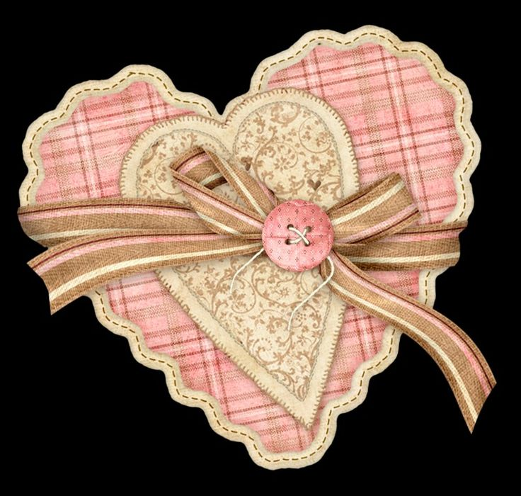

Rosalind’s
notebook
Rosie · she/her · they/them · 🎀
01 / About me
A restless spirit.
A collection of Victorian dolls, brought to life by a restless spirit!
Rosalind was someone else at one point. However, ever since she woke up in the body of an old Rosalind brand doll, she has no recollection of who she is, or her life prior!
With the help of MonstaMelodic, she hopes to learn more about who she was, and regain her memories.
“Is this how you use a computer? Am I doing it right?”
02 / The good things
Likes
- Sweets (especially cake!)
- Fruit teas
- Horror of all varieties (psychological is my favorite though!)
- The color pink (could you tell?)
- Animation
- Cute things
- Flower Language
03 / No, thank you
Dislikes
- Hot days
- Bitter/Sour things
- Incense (I much prefer scented candles!)
- Bugs
A romantic at heart.
Always late to memes and trends.
Very forgetful.
Always late to memes and trends.
Very forgetful.
04 / Favorites
Shows
- Puella Magi Madoka Magica ♡
- Dungeon Meshi
- Infinity Train
Musicians
- Hoshimachi Suisei
- ILLIT
- Loona
- New Jeans
05 / Movie nights
Movies
- Perfect Blue
- Song of the Sea
- Coherence
- Nope
- Puella Magi Madoka Magica: Rebellion
I love Madoka Magica. A lot.